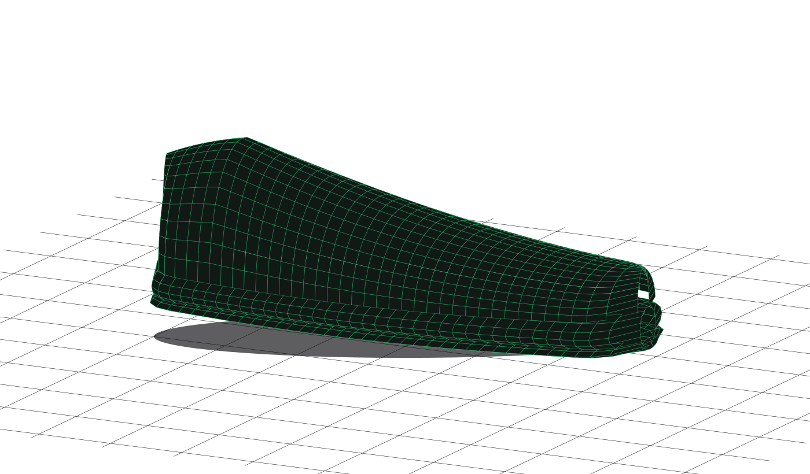
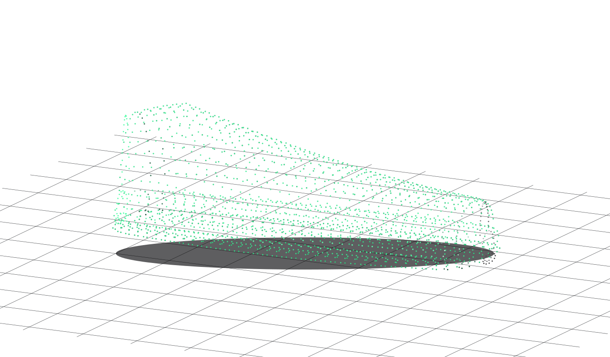
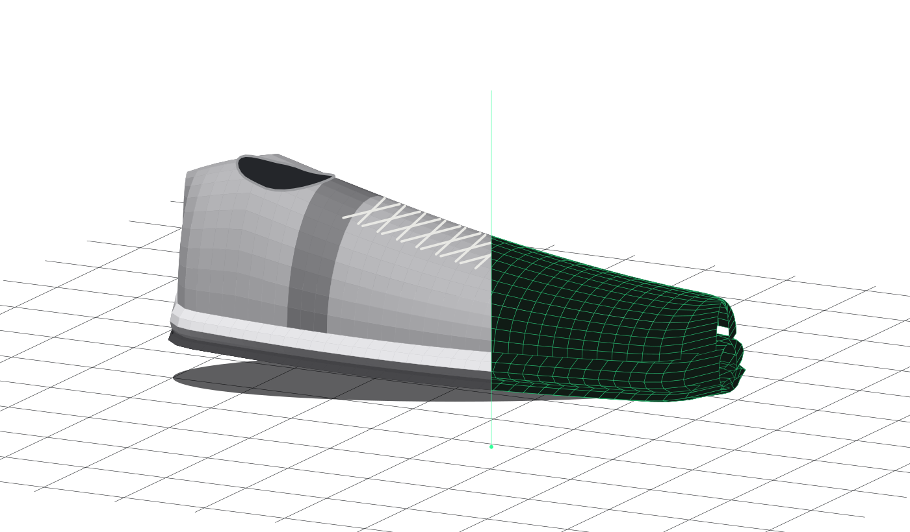

LoRA training
Product imagery for targeted model training and creative exploration.
Designing the scanning platform.
Building Deep Capture Studio.

Deep Capture is an advanced 3D + AI capture system for digitizing footwear and apparel at high resolution.
Designed the scanning platform.
Built Deep Capture Studio.
The Deep Capture pipeline is data-driven, mixing traditional deterministic automation with agentic workflows.
The system captures thousands of high-resolution images across multiple viewpoints and lighting conditions.

Deep Capture supports standard PBR material information, including roughness and metalness, alongside surface normals, height data and ultraviolet capture.
The capability extends beyond visible color into the properties that shape a digital product.
High-resolution, multi-view capture provides a foundation for LoRA training, Gaussian-splat reconstruction and AI vision models.
Product imagery for targeted model training and creative exploration.

Multi-view imagery for reconstructing the product spatially.
Capture data for models that identify and interpret product imagery.
Advanced computer vision and AI segmentation help isolate the product and its regions for downstream processing and content creation.

A trained AI model works with a 3D representation, camera positions and nearby source photographs to render the chosen product view.
The aim is high-fidelity, high-resolution product imagery grounded in the original capture.
Deep Capture brings product capture, 3D, materials and AI together as a foundation for creative, marketing and sales content.
The accomplishment is the connected system, and the range of capabilities it makes available.